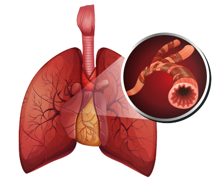

Surgical removal of the adenoids, lymphatic tissue in the nasopharynx.
Lymphatic tissue in the nasopharynx that helps trap harmful bacteria and viruses.
Inflammation of the nasal mucous membrane due to allergic reactions, causing sneezing and congestion.
Complete loss of the sense of smell.
A type of nasal polyp that originates from the maxillary sinus and extends into the choana.
Temporary cessation of breathing, particularly during sleep.
A chart that shows the results of a hearing test, indicating hearing sensitivity across different frequencies.
A test used to evaluate hearing ability by measuring the range and sensitivity of sound frequencies.
A procedure that uses a thin tube with a camera to view the airways and lungs.
The process of burning tissue to stop bleeding or remove abnormal tissue.
Persistent inflammation or infection of the middle ear, often leading to hearing loss.
Long-term inflammation of the sinuses, lasting for more than 12 weeks.
A condition where the nasal concha is enlarged or air-filled, potentially causing nasal obstruction.
An emergency surgical procedure to create an airway. It involves making an incision in the cricothyroid membrane.
Medication used to relieve nasal congestion by shrinking swollen nasal tissues.
Difficulty swallowing, often associated with discomfort in the throat.
Difficulty speaking, often characterized by hoarseness.
A hole or rupture in the tympanic membrane (eardrum), often caused by infection or trauma.
A technique that uses heat from electrical current to remove or destroy tissue.